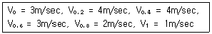
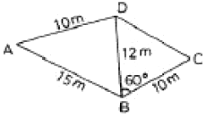
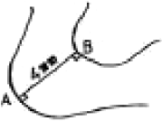
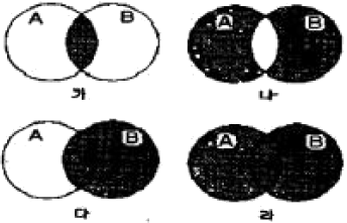

측량및지형공간정보산업기사 (2005-09-04 기출문제)
1과목: 응용측량
1. 노선측량의 시공관리 측량과 거리가 먼 것은?
- 기준점 확인
- 중심선 검축
- 인조점 확인 및 복원
- 용지도 작성
(정답률: 알수없음)

2. 삼각형 꼭지점의 좌표가 각각 A(3, 4), B(6, 7), C(7, 1)일 때 삼각형의 면적은? (단, 단위는 m임)
- 10.5m2
- 12..5m2
- 15.0m2
- 17.5m2
(정답률: 알수없음)
3. 50m마다 5cm가 짧은 테이프로 정방형의 면적을 측정한 결과 19.960m2이었다. 실제 면적은?
- 19.900m2
- 19.920m2
- 20.000m2
- 21.000m2
(정답률: 알수없음)
4. 다각측량에서 기준점의 위치를 높은 정확도로 결정하는 방법으로 가장 좋은 것은?
- 삼각점에서 동일한 삼각점에 연결시킨다.
- 임의의 한점에서 시작하여 같은 점으로 되돌아 온다.
- 삼각점에서 다른 삼각점으로 연결시킨다.
- 정확도가 높은 삼각점에서 임의의 점으로 연결한다.
(정답률: 알수없음)
5. 100m2의 정방형의 토지의 면적을 0.1m2까지 정확하게 구하자면 이에 필요한 1변의 길이는 최대 얼마까지 정확하게 읽어야 하는가?
- 1cm
- 1mm
- 5cm
- 5mm
(정답률: 알수없음)
6. 하천 측량시 거리표는 대략 몇 m를 표준으로 설치하는가?
- 20m
- 50m
- 100m
- 200m
(정답률: 알수없음)
7. 반지름 150m의 단곡선을 설치하기 위하여 교각을 관측하였더니 90°이었다. 곡선의 시점의 추가거리는? (단, 교점의 추가거리는 1200.50m 이다.)
- 950.50m
- 1⑤0.50m
- 1100.50m
- 1250.50m
(정답률: 알수없음)
8. 경관측량에서 개성적 요소에 의한 분류와 관계가 없는 것은?
- 천연경관
- 파노라믹 경곤
- 포위된 경관
- 인공경관
(정답률: 알수없음)
9. 다음 중 클로소이드의 설치방법이 아닌 것은?
- 주접선으로부터 직각좌표에 의한 설치법
- 극각 동경법에 의한 설치법
- 현각 현장법에 의한 설치법
- 편각법에 의한 설치법
(정답률: 알수없음)
10. 클로소이드(Clothold)곡선의 매개변수 A를 2배로 늘리면 곡선의 반지름이 일정할 경우 완화곡선의 길이는 몇 배로 되는가?
- 2배
- 4배
- 8배
- 1/2배
(정답률: 알수없음)
11. 하천의 수위에서 어떤 기간내에 있어서의 관측수위 중 이 수위보다 수위가 높은 회수와 낮은 회수가 같게 되는 수위는?
- 평수위(平水位)
- 평균수위(平均水位)
- 최다(最多水位)
- 평균저수위(平均底水位)
(정답률: 알수없음)
12. 철도 곡선부의 캔트량을 계산할 때 필요 없는 요소는?
- 궤간
- 속도
- 교각
- 곡선의 반지름
(정답률: 알수없음)
13. 평균유속을 구하기 위해 수면으로부터 수심(h)에 대하여 각 깊이별 유속을 측정한 결과 다음과 같았다. 3점법에 의한 평균유속은?

- 2.0m/sec
- 2.5m/sec
- 3.0m/sec
- 3.5m/sec
(정답률: 알수없음)
14. 어떤 광산의 자기편차가 5° 36‘ W이고 한 측선의 자침방위가 S 25' 50" W 라고 할 때 그 측선의 진북방위각은?
- 149° 34‘
- 160° 46‘
- 200° 14‘
- 211° 26‘
(정답률: 알수없음)
15. 축척 1/1200 지도상의 면적을 축척 1/1000로 잘못 보고 측정하였더니 100m2가 나왔다면 실제면적은?
- 333m2
- 222m2
- 144m2
- 111m2
(정답률: 알수없음)
16. 다음 그림과 같은 사변형 ABCD의 면적은?

- 121.8m2
- 59.8m2
- 68.4m2
- 111.8m2
(정답률: 알수없음)
17. 다음 중 자연경관에 가장 큰 영향을 미치는 요인은?
- 도시계획현황
- 식생(植生)과 지형현황
- 주민구성
- 지역의 역사적 배경
(정답률: 알수없음)
18. 터널의 두 점 AB를 연결하는 갱도를 굴진하고자 한다. A점의 좌표는 (1000.00, 10000.00)이고 B점의 좌표는 (2000.00, 1820.55)일 때 갱도의 거리는? (단, 좌표의 단위는 m이다.)
- 2704.52m
- 23⑤.31m
- 1799.44m
- 1293.56m
(정답률: 알수없음)
19. 터널측량에서 지상 측점과 터널내부의 측점이 일치하도록 하는 측량은?
- 지하 수준측량
- 터널 내외 연결측량
- 지하 측량
- 지상 측량
(정답률: 알수없음)
20. 하천이나 항만 등에서 심천측량을 한 결과의 지형의 수심을 표시하는 방법으로 가장 좋은 것은?
- 점고법
- 지모법
- 등고선법
- 음영법
(정답률: 알수없음)
2과목: 사진측량 및 원격탐사
21. 절대표정(absolute orientation) 작업에 대한 설명으로 옳지 않은 것은?
- 축척을 결정한다.
- 위치를 결정한다.
- 화면거리 조정과 주점의 표정작업이다.
- 표고와 경사의 결정작업이다.
(정답률: 알수없음)
22. 수치표고모형(DEM) 또는 불규칙삼각망(TIN)을 이용하여 추출할 수 있는 정보가 아닌 것은?
- 경사 방향
- 등고선
- 가시도 분석
- 지표 피복 활용
(정답률: 알수없음)
23. 항공카메라의 피사각이 90° 전후로서 일반도화나 판독용으로 주로 쓰이는 카메라는?
- 협각 카메라
- 보통각 카메라
- 광각 카메라
- 초광각 카메라
(정답률: 알수없음)
24. 항공사진에서 사진의 주점으로부터 10cm 떨어진 곳에 관측점이 있다. 이 관측점의 실제 표고가 150m일 경우 사진상의 기본변위량은? (단, 촬영고도는 2,000m임)
- 5.5mm
- 7.5mm
- 9.5mm
- 11.5mm
(정답률: 알수없음)
25. 초점거리 150m의 카메라로 촬영고도 3000m에서 찍은 연직사진의 축척은?
- 1/15,000
- 1/20,000
- 1/25,000
- 1/30,000
(정답률: 알수없음)
26. 초점거리 150mm의 사진기로 표고 3000m에서 촬영한 연직사진이 있다. 표고 200m 지점의 교량이 이 사진상에서 3.0mm로 나타난다면 이 교량의 실제 길이는?
- 50m
- 56m
- 60m
- 65m
(정답률: 알수없음)
27. 지리정보시스템 자료연산 기법 중 하나로 특정위치 주변의 특성을 평가하기 위한 방법으로 많이 이용되며 대상물체 주변의 영향권 분석 등에 주로 이용되는 연산 기법은?
- 측정 연산
- 중첩 및 분리 연산
- 망분석 연산
- 근린(근접) 연산
(정답률: 알수없음)
28. 다음 중 국가지리정보시스템(NGIS) 사업을 통해 구축된 표준 수치지형도 축척에 해당되지 않는 것은?
- 1:600
- 1:1,000
- 1:5,000
- 1:25,000
(정답률: 알수없음)
29. 다음 중 상호표정인자가 아닌 것은?
- by
- bx
- bz
- ω
(정답률: 알수없음)
30. 동일한 지역에 대한 서로 다른 두 개 또는 다수의 레이어로부터 필요한 도형자료나 속성자료를 추출하기 위하여 많이 이용되는 공간분석 방법은?
- 버퍼링 분석
- 네이워크 분석
- 중첩 분석
- 3차원 분석
(정답률: 알수없음)
31. 동서 26km, 남북 8km인 지역을 사진의 크기 23cm×23cm인 광각카메라로 종중복도 60%, 횡중복도 30%의 사진축척 1/30,000로 촬영할 때 입체모델수는? (단, 안전율은 고려치 않음)
- 16
- 18
- 20
- 22
(정답률: 알수없음)
32. 다음 중 항공사진 측량의 작업에 속하지 않은 것은?
- 대공표지 설치
- 세부도화
- 사진기준점 측량
- 전문측량
(정답률: 알수없음)
33. 항공삼각측량을 좌표관측기의 차원별로 분류할 때에 3차원 항공삼각측량법(평면 X, Y, Z)에 해당되는 것은?
- 도해사선법
- templet법
- 계산법 또는 해석적 사선법
- 정밀좌표측정기에 의한 방법
(정답률: 알수없음)
34. 한쌍의 항공사진을 좌우로 떼어 놓고 입체시 하는 경우 자연의 기복은 어떻게 보이는가?
- 실제 지형보다 과장되어 보인다.
- 실제 지형보다 축소되어 보인다.
- 실제 지형과 동일하다.
- 촬영 계절에 따라 다르다.
(정답률: 알수없음)
35. 사진의 중심점으로서 항공사진 촬영에서 중심투영점을 지나는 광선이 사진면과 수직으로 만나는 점을 무엇이하 하는가?
- 연직점
- 주점
- 등각점
- 부점
(정답률: 알수없음)
36. 항공삼각 측량에서 스트립(strip)을 형성하기 위해 사용되는 점은?
- 종접합점
- 횡접합점
- 자칭점
- 자연점
(정답률: 알수없음)
37. 격자구조자료(raster data)의 저장방식으로 사용되지 않는 것은?
- 사슬부호(Chain Code)방식
- 폐합부호(Closure Code)방식
- 블록부호(Blocik Code)방식
- 연속분할부호(Run-Length Code)방식
(정답률: 알수없음)
38. 세계 최초로 컴퓨터를 활용한 GIS를 성공적으로 도입하여 수행하고 있는 국가는?
- 호주
- 미국
- 캐나다
- 일본
(정답률: 알수없음)
39. 비행고도가 3000m이고 사진(Ⅰ)의 주점 기선장이 70mm, 사진(Ⅱ)의 주점 기선장이 72mm일 때 시차차가 1.5mm이었다면 그림자의 고저차는?
- 33mm
- 43mm
- 53mm
- 63mm
(정답률: 알수없음)
40. 래스터데이터(격자자료) 구조에 대한 설명으로 옳지 않은 것은?
- 셀의 크기에 관계없이 컴퓨터에 저장되는 자료의 양은 항상 일정하다.
- 셀의 크기는 해상도에 영향을 미친다.
- 셀의 크기에 의해 지리정보의 위치 정확성이 결정된다.
- 연속면에서 위치의 변화에 따라 속성들의 점진적인 현상 변화를 효과적으로 표현할 수 있다.
(정답률: 알수없음)
3과목: GIS 및 GPS
41. GIS의 특징에 대한 설명으로 틀린 것은?
- 기존의 도면으로부터도 자료를 획득할 수 있다.
- 특정한 사용자의 요구에 부응하는 특수지도를 쉽게 제작할 수 있다.
- 자료의 통계적 분석이 원활하며 통계지도의 제작에 유리하다.
- 자료가 수치적으로 구성되어 축척 변경이 어렵다.
(정답률: 알수없음)
42. 그림과 같이 인접 주곡선 사이의 도상간격이 4mm인 두점 A, B사이의 실제경사는 몇 %인가? (단, 지도는 우리나라 1:25,000 축척의 지형도이다.)

- 1%
- 5%
- 10%
- 20%
(정답률: 알수없음)
43. 다음 오차 중에서 최소제곱법의 원리를 이용하여 처리할 수 있는 것은?
- 잔차
- 우연오차
- 정오차
- 착오
(정답률: 알수없음)
44. 수준측량의 허용오차가 왕복거리 2km에 대하여 20mm일 때 왕복거리 1km에 대한 허용오차는?
- 14mm
- 16mm
- 18mm
- 20mm
(정답률: 알수없음)
45. 표준길이보다 3cm가 긴 30m의 테이프로 거리를 측정한 결과 두 점간의 거리가 300m이었다. 이 거리의 정확한 값은 얼마인가?
- 229.3m
- 299.7m
- 300.3m
- 300.7m
(정답률: 알수없음)
46. 미지점에 평판을 세우고 도상에서 그 점을 구할 때 사용되는 측량방법은?
- 방사법
- 전방교회법
- 후방교회법
- 적측법
(정답률: 알수없음)
47. 축척 1/25,000 지형도에서 산정상부터 산밑까지의 지도상 거리가 5.6cm이고, 실제 지형에서는 산정상의 표고가 335.75m, 산밑의 표고가 1.2.50m일 때 사면의 경사도는?
- 1/4
- 1/5
- 1/6
- 1/7
(정답률: 알수없음)
48. 지형공간정보 체계의 자료에 대한 설명으로 옳지 않은 것은?
- 자료는 위치자료(도형자료)와 특성자료(속성자료)로 대별된다.
- 위치자료의 기반은 도면이나 지도와 같은 도형에서 위치의 값을 수록하는 정보의 파일이다.
- 일반적인 통계자료 또는 영상자료의 파일은 특성자료로 사용할 수 없다.
- 위치자료 기반과 특성자료 기반은 서로 연관성을 가지고 있어야 한다.
(정답률: 알수없음)
49. 삼각측량에 있어서 삼각망을 구성하는 형태로 가장 좋은 것은?
- 지각 삼각형
- 정 삼각형
- 2등변 삼각형
- 둔각 삼각형
(정답률: 알수없음)
50. 1등 삼각측량을 하고자 할 때에 어떤 측각법이 가장 적당한가?
- 조합각 관측법
- 방향각법
- 배각법
- 단각법
(정답률: 알수없음)
51. 다음 중 평판측량에서의 오차원인으로 기계적인 오차에 해당되는 것은?
- 구심에 의한 오차
- 평판의 결사로 인한 오차
- 방향선을 그을 때 생기는 오차
- 시준선이 기울어져서 생기는 오차
(정답률: 알수없음)
52. 지형공간자료를 입력하는 단계로 옳게 나열된 것은?
- 비공간 속성자료의 입력→공간자료와 비공간자료의 연결→공간(위치)정보의 입력
- 공간자료와 비공간자료의 연결→공간(위치)정보의 입력→비공간 속성자료의 입력
- 공간(위치)정보의 입력→비공간 속성자료의 입력→공간자료와 비공간자료의 연결
- 공간(위치)정보의 입력→공간자료와 비공간자료의 연결→비공간 속성자료의 입력
(정답률: 알수없음)
53. 직접법으로 30m, 등고선을 측정하고자 할 때, 표고 30.2m인 기지점 A에서 기계고가 1.1m이었다면 30m 등고선을 그리기 위해서 읽어야 할 표척의 높이는?
- 0.8m
- 1.3m
- 1.7m
- 2.1m
(정답률: 알수없음)
54. 지오이드의 설명으로 잘못된 것은?
- 형상이 매끈하지 않고 매우 복잡하다.
- 지구타원체와 일치한다.
- 평균해수면과 일치한다.
- 등포텐셜면이다.
(정답률: 알수없음)
55. 다음 중 장거리 측량에서 가장 정밀한 거리 측량기는?
- lnvar 줄자
- EDN(전자파거리 측정기)
- 쇠줄자
- 천줄자
(정답률: 알수없음)
56. 다음의 삼변측량에 관한 설명 중 옳지 않은 것은?
- 삼각점의 위치를 변장측량법을 이용하면 대삼각망의 기선장을 간접측량하기 때문에 기선삼각망의 확대가 필수적이다.
- 변장만을 측점하여 삼각망(삼변측량)을 구성할 수 있다.
- 수평각을 대신하여 삼각형의 변장을 직접 관측하여 삼각점의 위치를 정하는 측량이다.
- 관측요소가 변장뿐이므로 수학적 계산으로 변으로부터 각을 구하고, 이 각과 변에 의해 수평위치를 구한다.
(정답률: 알수없음)
57. 다음은 부울논리(Boolean Logic)를 이용하여 속성과 공간적 특성에 대한 자료를 검색하는 방법인데 이 중 잘못 짝지어진 것은?

- 그림 [가] - A AND B
- 그림 [나] - A XOR B
- 그림 [다] - A NOT B
- 그림 [라] - A OR B
(정답률: 알수없음)
58. 다각형의 경계가 인접지역의 점들로부터 같은 거리에 놓이게 하는 방법으로 구성되는 것은?
- 불규칙 삼각망(TIN)
- 티센 다각형(Thiessen)
- 폴리곤(Polygon)
- 타일(Tile)
(정답률: 알수없음)
59. 폐합오차 조정방법에서 컴파스법칙은 다음 중 어느 경우에 사용하는가?
- 각 관측과 거리관측에 큰 오차를 포함하고 있을 때
- 각 관측과 거리관측의 정밀도가 동일할 때
- 각 관측의 정도가 거리관측의 정밀도보다 높을 때
- 각 관측의 정도가 거리관측의 정밀도보다 낮을 때
(정답률: 알수없음)
60. 거리와 방향을 측정하여 평면위치를 구하는 경우 700m의 거리측정에서 방향에 15°의 오차가 있다고 할 때 발생되는 위치오차는?
- 0.⑤1m
- 0.049m
- 0.038m
- 0.027m
(정답률: 알수없음)
4과목: 측량학
61. 측량성과시 고시 사항이 아닌 것은?
- 측량의 종류, 정확도
- 측량실시에 소요되는 경비 및 인력
- 측량실시의 시기 및 지역
- 측량성과의 보관장소
(정답률: 알수없음)
62. 측량업등록의 결격사유로 잘못된 것은?
- 금치산자 또는 한정치산자
- 금고이상의 실형의 선고를 받고 그 집행이 종료된 날부터 3년이 경과되지 아니한 자
- 파산선고를 받고 복권되지 아니한 자
- 임원중에 한정치산자가 있는 법인
(정답률: 알수없음)
63. 측량법의 용어 중 방주자의 정의(定義)로 옳은 것은?
- 규정에 의하여 측량업을 등록한 자
- 기본측량, 공공측량의 용역을 도급 받는 자
- 측량용역을 측량업자에게 도급 받는 자
- 측량용역을 측량업자에게 도급 주는 자
(정답률: 알수없음)
64. 1/50,000 지형도에서 고층건물지대란 밀집건물지대에 있어서 5층이상의 건물이 밀집하여 있는 지역을 의미하여 도상에서 최소의 크기가 몇 mm이상이어야 하는가?
- 4mm
- 3mm
- 2mm
- 1mm
(정답률: 알수없음)
65. 지물의 변동 등으로 인하여 기본측량의 측량성과가 현장과 다르게 되었을 경우 이를 수정할 수 있는 자는?
- 국토지리정보원장
- 건설교통부장관
- 측량심의회 위원장
- 대한측량협회장
(정답률: 알수없음)
66. 건설교통부장관의 권한 중 국토지리정보원장에게 권한위임한 사항이 아닌 것은?
- 기본측량의 실시에 관한 통지
- 기본측량을 위한 표지설치의 통지
- 측량성과의 고시
- 공공측량작업규정의 승인
(정답률: 알수없음)
67. 측량업자가 폐업한 때에 신고의무자로 옳은 것은?
- 청산인
- 파산관재인
- 측량업자이었던 개인 또는 법인의 대표자
- 그 사업의 양수인 또는 상속인
(정답률: 알수없음)
68. 공공측량의 측량성과 또는 측량기록의 보관자는?
- 시, 도지사
- 건설교통부장곤
- 공공측량 계획기관
- 공공측량 작업기관
(정답률: 알수없음)
69. 측량업자인 법인이 파산 또는 합병 외의 사유로 해산한 때 청산인은 그 사유가 발생한 날로부터 최대 며칠 이내에 신고하여야 하는가?
- 30일
- 20일
- 10일
- 7일
(정답률: 알수없음)
70. 기본측량의 실시공고 내용과 거리가 먼 것은?
- 측량의 종류 및 목적
- 측량의 실시시간
- 측량의 도급액
- 측량의 실시지역
(정답률: 알수없음)
71. 공공측량의 실시에 기준이 되는 것을 가장 잘 설명한 것은?
- 삼각점 성과표
- 지적측량의 성과
- 수로측량의 성과
- 기본측량 또는 공공측량의 측량성과
(정답률: 알수없음)
72. 다음의 측량표중 영구표지는?
- 측표
- 측량표지막대
- 표기
- 검조의
(정답률: 알수없음)
73. 측량법 중 200만원 이하의 과태료에 해당되는 벌칙은?
- 측량업 등록증을 대여한 자
- 기본측량 성과를 고의로 사실과 상이하게 한 자
- 성능검사를 부정하게 한 자
- 정당한 사유없이 토지ㆍ죽목등의 일시사용을 거부한 자
(정답률: 알수없음)
74. 건설교통부장관은 일반측량의 실시자에게 측량성과 등 사본의 제출을 요구할 수 있다. 다음 중 그 목적이 아닌 것은?
- 측량의 중복배제
- 측량에 관한 자료의 수집ㆍ분석
- 측량성과의 심사
- 측량의 정확성 확보
(정답률: 알수없음)
75. 다음 중 공공측량에 속하는 것은?
- 기본측량 외의 측량 중 지방자치 단체가 실시하는 측량
- 수로업무에 의한 수로측량
- 지적접에 의한 지적측량
- 국지적측량 및 고도의 정확도를 필요로 하지 아니하는 측량으로서 건설교통부장관이 정하여 고시하는 측량
(정답률: 10%)
76. 다음 측량의 종류 중 측량법의 규제를 받지 아니하는 것은?
- 지하시설물측량
- 측지측량
- 토지의 신규등록측량
- 항공촬영
(정답률: 알수없음)
77. 다음 중 측량법에서 정의한 측량계획기관이란?
- 측량업을 영위하는 기관
- 기본측량 및 공공측량에 관한 계획을 수립하는 자
- 측량에 관한 계획, 설계에 따라 측량을 실시하는 자
- 측량에 관한 계획, 설계, 실시, 지도, 감리 및 조사연구를 하는 자
(정답률: 알수없음)
78. 1/25,000 지형도 도식적용규정에서 도로에 관한 설명으로 틀린 것은?
- 도로는 반드시 축척화된 실폭으로만 표시한다.
- 도로란 일반교등에 공(供)하는 지상 시설을 망하며 터널 및 교량등의 시설을 포함한다.
- 도로구분을 하는 경우의 최소의 도로장은 도상 1.0mm를 표준으로 한다.
- 도로말단에 장해물이 있어 자동차의 통행이 불가능할 때에는 말단부를 막아 버린다.
(정답률: 알수없음)
79. 측량표를 감시하는 자가 아닌 것은?
- 동장
- 군수
- 구청장
- 시장
(정답률: 알수없음)
80. 측량심의회의 심의사항 중 틀린 것은?
- 측량기술의 연구ㆍ발전에 관한 사항
- 측량도서의 발간
- 공공측량의 계획의 수립 및 실시에 관한 사항
- 공공측량 및 일반측량에서 제외되는 측량의 범위
(정답률: 알수없음)